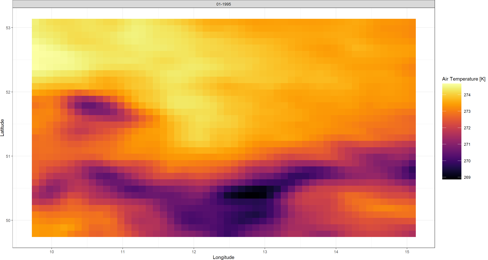
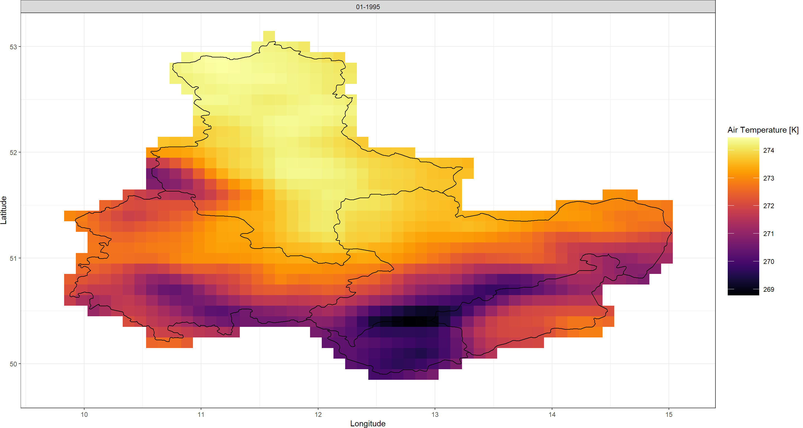
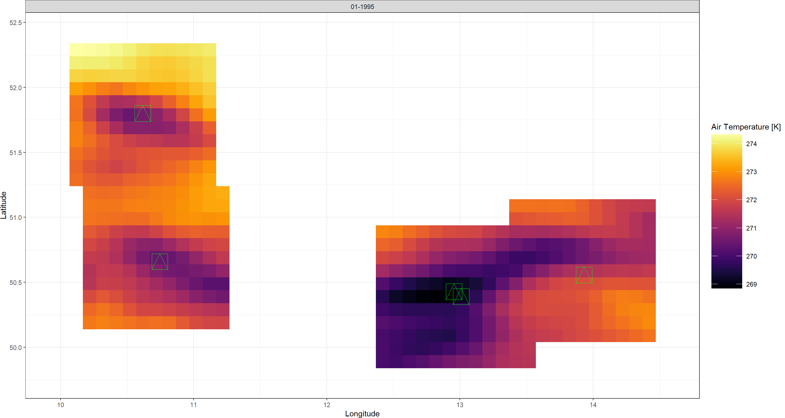
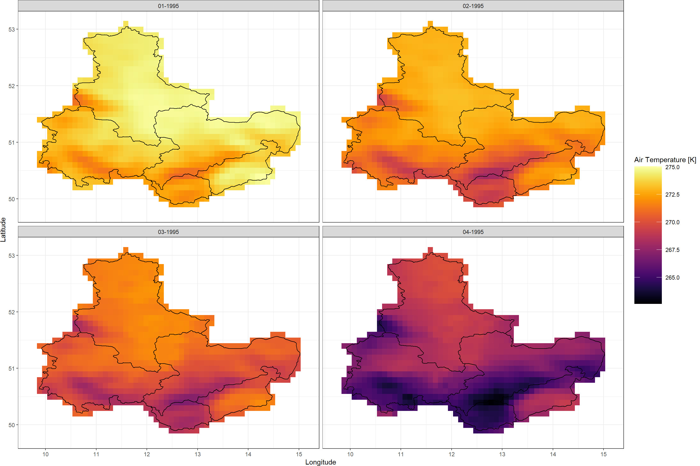
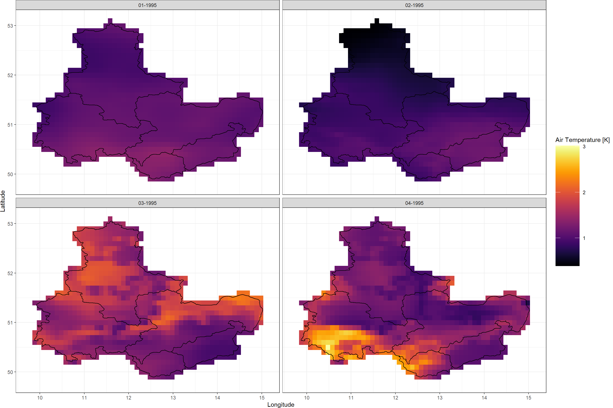
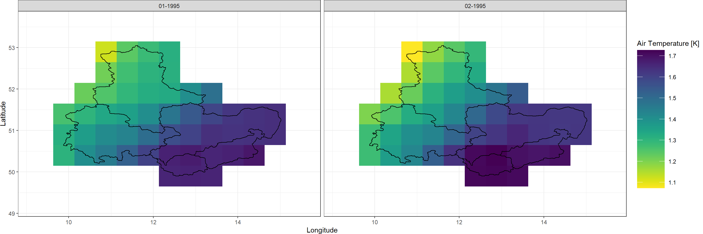
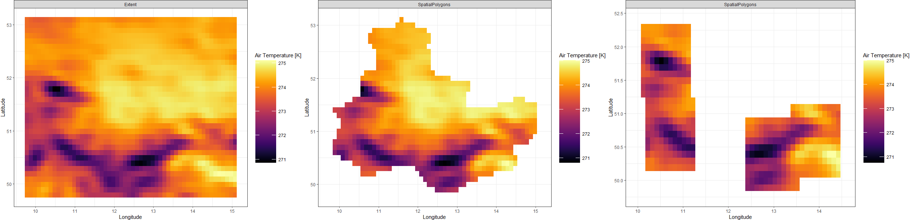
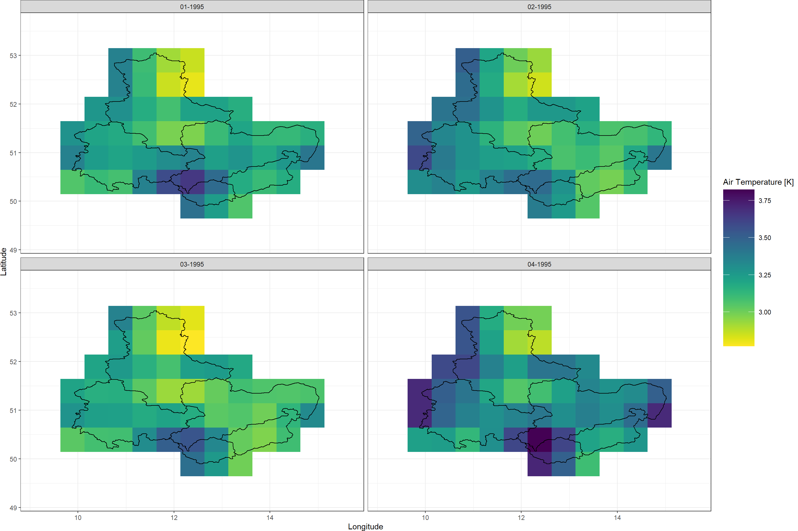

Downloading & Processing
KrigR is currently undergoing development. As a result, this part of the workshop has become deprecated. Please refer to the setup quick guide portions of this material as these are up-to-date.
First, we load KrigR:
library(KrigR)
KrigR are staged and executed with the download_ERA()function.
download_ERA() is a very versatile function and I will show you it’s capabilities throughout this material.
KrigR and subsequently make them more sophisticated during this workshop.
Downloading Climate Data
Let’s start with a very basic call to download_ERA().
For this part of the workshop, we download air temperature for my birth month (January 1995) using the extent of our target region.
See the code chunk below for explanations on each function argument. If you want to know about the defaults for any argument in download_ERA() simply run ?download_ERA(). Doing so should make it obvious why we specify the function as we do below.
Click here for file if download takes too long:
Download FirstDL.nc and place it into your data directory.FirstDL <- download_ERA(
Variable = "2m_temperature", # the variable we want to obtain data for
DataSet = "era5-land", # the data set we want to obtain data from
DateStart = "1995-01-01", # the starting date of our time-window
DateStop = "1995-01-31", # the final date of our time-window
Extent = Extent_ext, # the spatial preference we are after
Dir = Dir.Data, # where to store the downloaded data
FileName = "FirstDL", # a name for our downloaded file
API_User = API_User, # your API User Number
API_Key = API_Key # your API User Key
)
## download_ERA() is starting. Depending on your specifications, this can take a significant time.
## User 39340 for cds service added successfully in keychain
## Staging 1 download(s).
## 0001_FirstDL.nc download queried
## Requesting data to the cds service with username 39340
## - staging data transfer at url endpoint or request id:
## e48f036d-0979-4db4-bc4e-9d08be01c9d6
## - timeout set to 10.0 hours
## - polling server for a data transfer
\ polling server for a data transfer
| polling server for a data transfer
/ polling server for a data transfer
- polling server for a data transfer
\ polling server for a data transfer
| polling server for a data transfer
/ polling server for a data transfer
- polling server for a data transfer
\ polling server for a data transfer
| polling server for a data transfer
/ polling server for a data transfer
- polling server for a data transfer
\ polling server for a data transfer
| polling server for a data transfer
/ polling server for a data transfer
- polling server for a data transfer
\ polling server for a data transfer
| polling server for a data transfer
/ polling server for a data transfer
- polling server for a data transfer
\ polling server for a data transfer
| polling server for a data transfer
/ polling server for a data transfer
- polling server for a data transfer
## Downloading file
##
|
| | 0%
|
|================================================================================| 100%
## - moved temporary file to -> /Users/erikkus/Documents/HomePage/content/courses/krigr/Data/0001_FirstDL.nc
## - Delete data from queue for url endpoint or request id:
## https://cds.climate.copernicus.eu/api/v2/tasks/e48f036d-0979-4db4-bc4e-9d08be01c9d6
##
## Checking for known data issues.
## Loading downloaded data for masking and aggregation.
## Aggregating to temporal resolution of choice
As you can see the download_ERA() function updates you on what it is currently working on at each major step. I implemented this to make sure people don’t get too anxious staring at an empty console in R. If this feature is not appealing to you, you can turn this progress tracking off by setting verbose = FALSE in the function call to download_ERA().
download_ERA() via other means so that when you execute, you get progress tracking.
I will make exceptions to this rule when there are special things I want to demonstrate.
Now, let’s look at the raster that was produced:
FirstDL
## class : RasterStack
## dimensions : 34, 54, 1836, 1 (nrow, ncol, ncell, nlayers)
## resolution : 0.09999999, 0.09999998 (x, y)
## extent : 9.72, 15.12, 49.74, 53.14 (xmin, xmax, ymin, ymax)
## crs : +proj=longlat +datum=WGS84 +no_defs
## names : X1995.01.01
One layer (i.e., one month) worth of data. That seems to have worked. If you are keen-eyed, you will notice that the extent on this object does not align with the extent we supplied with Extent_ext. The reason? To download the data, we need to snap to the nearest full cell in the data set from which we query our downloads. KrigR always ends up widening the extent to ensure all the data you desire will be downloaded.
Finally, let’s visualise our downloaded data with one of our user-defined plotting functions:
Plot_Raw(FirstDL, Dates = "01-1995")

That is all there is to downloading ERA5(-Land) data with KrigR. You can already see how, even at the relatively course resolution of ERA5-Land, the mountain ridges along the German-Czech border are showing up. This will become a lot clearer of a pattern once we
downscale our data.
download_ERA() provides you with a lot more functionality than just access to the ERA5(-Land) data sets.
With download_ERA(), you can also carry out processing of the downloaded data. Data processing with download_ERA() includes:
- Spatial Limitation to cut down on the data that is stored on your end.
- Temporal Aggregation to establish data at the temporal resolution you desire.
Spatial Limitation
Let’s start with spatial limitation. As discussed
previously, download_ERA() can handle a variety of inputs describing spatial preferences.
KrigR is capable of learning about your spatial preferences in three ways:
- As an
extentinput (a rectangular box). - As a
SpatialPolygonsinput (a polygon or set of polygons). - As a set of locations stored in a
data.frame.
These spatial preferences are registered in KrigR functions using the Extent argument.
You might now ask yourself: How does KrigR achieve spatial limitation of the data? Couldn’t we just simply download only the data we are interested in?
The ECMWF CDS gives us tremendous capability of retrieving only the data we want. However, the CDS only recognises rectangular boxes (i.e., extents) for spatial limitation. Consequently, we always have to download data corresponding to a rectangular box in space. When informing KrigR of your spatial preferences using a data.frame or SpatialPolygons, download_ERA() automatically (1) identifies the smallest extent required by your input, (2) downloads data corresponding to this extent, and (3) masks our any data not queried by you.
KrigR’s spatial limitation features ensures faster computation and smaller file sizes (depending on file type).
In the following, I demonstrate how to use the Extent argument in download_ERA().
Shape (SpatialPolygons)
Let me show you how SpatialPolygons show up in our data with download_ERA(). Remember that these SpatialPolygons originate
here. First, we query our download as follows:
Click here for file if download takes too long:
Download SpatialPolygons_DL.nc and place it into your data directory.SpatialPolygons_DL <- download_ERA(
Variable = "2m_temperature",
DataSet = "era5-land",
DateStart = "1995-01-01",
DateStop = "1995-01-31",
Extent = Shape_shp, # we simply switch the Extent Argument
Dir = Dir.Data,
FileName = "SpatialPolygons_DL",
API_User = API_User,
API_Key = API_Key
)
Plot_Raw(SpatialPolygons_DL, Dates = "01-1995", Shp = Shape_shp)

You will find that the data retained with the spatial limitation in download_ERA() contains all raster cells of which even a fraction falls within the bounds of the SpatialPolygons you supplied. This is different from standard raster masking through which only cells whose centroids fall within the SpatialPolygons are retained.
raster masking in KrigR always ensures that the entire area of your spatial preferences are retained.
Points (data.frame)
Now we move on to point-locations. Often times, we are researching very specific sets of coordinates, rather than entire regions. download_ERA() is capable of limiting data to only small areas (of a size of your choosing) around your point-locations. For our purposes here, we make use of a set of mountain-top coordinates throughout our study region. Remember that these coordinates (stored in a data.frame) originate
here.
This time around, we need to tell download_ERA() about not just the Extent, but also specify how much of a buffer (Buffer in $°$) to retain data for around each individual (ID) location.
The data.frame input to the Extent must contain a column called Lat and a column called Lon:
In addition, one must also specify:
- A
Bufferin $°$ to be drawn around each location. - The name of the
IDcolumn in yourdata.framewhich indexes each individual location.
Let’s stage such a download:
Click here for file if download takes too long:
Download points_DL.nc and place it into your data directory.points_DL <- download_ERA(
Variable = "2m_temperature",
DataSet = "era5-land",
DateStart = "1995-01-01",
DateStop = "1995-01-31",
Extent = Mountains_df, # our data.frame with Lat and Lon columns
Buffer = 0.5, # a half-degree buffer
ID = "Mountain", # the ID column in our data.frame
Dir = Dir.Data,
FileName = "points_DL",
API_User = API_User,
API_Key = API_Key
)
Plot_Raw(points_DL, Dates = "01-1995") +
geom_point(aes(x = Lon, y = Lat), data = Mountains_df,
colour = "green", size = 10, pch = 14)

Above you can see how the mountain tops we are interested in lie exactly at the centre of the retained data. As we will see later, such spatial limitation greatly reduces computation cost of statistical downscaling procedures.
Temporal Aggregation
So far, we have downloaded a single layer of data (i.e., one monthly average layer) from the CDS. However, ERA5(-Land) products come at hourly temporal resolutions from which we can generate climate data at almost any temporal resolution we may require. This is what temporal aggregation in download_ERA() is for.
download_ERA() you can achieve almost any temporal resolution and aggregate metric you may desire.
Temporal aggregation with download_ERA() uses the arguments:
TResolutionandTStepto achieve desired temporal resolutionsFUNto calculate desired aggregate metrics
Temporal Resolution (TResolution and TStep)
Let’s start by querying data at non-CDS temporal resolutions.
The download_ERA() function in the KrigR package accepts the following arguments which you can use to control the temporal resolution of your climate data:
TResolutioncontrols the time-line thatTStepindexes. You can specify anything from the following:'hour','day','month', or'year'. The default is'month'.TStepcontrols how many time-steps to aggregate into one layer of data each. Aggregation is done via taking the mean per cell in each raster comprising time steps that go into the final, aggregated time-step. The default is1.
For now, let’s download hourly data from the CDS (this achieved by specifying a TResolution of "hour" or "day") and aggregate these to 1-day intervals. To make the result easier to visualise, we focus only on the first four days of January 1995:
Click here for file if download takes too long:
Download TimeSeries.nc and place it into your data directory.TimeSeries <- download_ERA(
Variable = "2m_temperature",
DataSet = "era5-land",
DateStart = "1995-01-01",
DateStop = "1995-01-04",
TResolution = "day", # aggregate to days
TStep = 1, # aggregate to 1 day each
Extent = Shape_shp,
Dir = Dir.Data,
FileName = "TimeSeries",
API_User = API_User,
API_Key = API_Key
)
Plot_Raw(TimeSeries, Dates = c("01-1995", "02-1995",
"03-1995", "04-1995"),
Shp = Shape_shp)
 Looks like a cold front rolled over my home area at the beginning of 1995.
KrigR automatically identifies which data set to download from given your temporal aggregation specification.
As soon as TResolution is set to 'month' or 'year', the package automatically downloads monthly mean data from the CDS. We do this to make the temporal aggregation calculation more light-weight on your computing units and to make downloads less heavy.
Let’s run through a few examples to make clear how desired temporal resolution of data can be achieved using the KrigR package:
| What We Want | TResolution | TStep |
|---|---|---|
| Hourly intervals | hour | 1 |
| 6-hour intervals | hour | 6 |
| Half-day intervals | hour | 12 |
| Daily intervals | day | 1 |
| 3-day intervals | day | 3 |
| Weekly intervals | day | 7 |
| Monthly aggregates | month | 1 |
| 4-month intervals | month | 4 |
| Annual intervals | year | 1 |
| 10-year intervals | year | 10 |
TResolution of 'month' will result in the download of full month aggregates for every month included in your time series.
For example, DateStart = "2000-01-20", DateStop = "2000-02-20" with TResolution = 'month', and TStep = 1 does not result in the mean aggregate for the month between the 20/01/200 and the 20/02/2000, but does result in the monthly aggregates for January and February 2000. If you desire the former, you would need to specify DateStart = "2000-01-20", DateStop = "2000-02-20" with TResolution = 'day', and TStep = 32 (the number of days between the two dates).
Aggregate Metrics (FUN)
Aggregate metrics can be particularly useful for certain study settings when climate variability or exposure to extreme events are sought after.
The FUN argument in download_ERA() controls which values to calculate for the temporal aggregates, e.g.: 'min', 'max', or 'mean' (default).
Any function which returns a single value when fed a vector of values is supported.
Let’s say we are interested in the variability of temperature across our study region in daily intervals. Again, we shorten our time-series to just four days:
Click here for file if download takes too long:
Download TimeSeriesSD.nc and place it into your data directory.TimeSeriesSD <- download_ERA(
Variable = "2m_temperature",
DataSet = "era5-land",
DateStart = "1995-01-01",
DateStop = "1995-01-04",
TResolution = "day",
TStep = 1,
FUN = sd, # query standard deviation
Extent = Shape_shp,
Dir = Dir.Data,
FileName = "TimeSeriesSD",
API_User = API_User,
API_Key = API_Key
)
Plot_Raw(TimeSeriesSD, Dates = c("01-1995", "02-1995",
"03-1995", "04-1995"),
Shp = Shape_shp)
 Seems like the temperatures fluctuated most on the third and fourth of January, but the area of temperature fluctuations changed location between those two days.
Dynamical Data Uncertainty
With climate reanalyses, you also gain access to uncertainty flags of the data stored in the reanalysis product. For the ERA5-family of products, this uncertainty can be obtained by assessing the standard deviation of the 10 ensemble members which make up the underlying ERA5 model exercise.
With download_ERA() you can obtain this information as follows:
Click here for file if download takes too long:
Download SpatialPolygonsEns_DL.nc and place it into your data directory.SpatialPolygonsEns_DL <- download_ERA(
Variable = "2m_temperature",
DataSet = "era5",
Type = "ensemble_members",
DateStart = "1995-01-01",
DateStop = "1995-01-02",
TResolution = "day",
TStep = 1,
FUN = sd,
Extent = Shape_shp,
Dir = Dir.Data,
FileName = "SpatialPolygonsEns_DL",
API_User = API_User,
API_Key = API_Key
)
Plot_Raw(SpatialPolygonsEns, Dates = c("01-1995", "02-1995"),
Shp = Shape_shp, COL = rev(viridis(100)))

As you can see here, there is substantial disagreement between the ensemble members of daily average temperatures across our study region. This uncertainty among ensemble members is greatest at high temporal resolution and becomes negligible at coarse temporal resolution. We document this phenomenon in this publication (Figure 1).
Final Downloads for Workshop Progress
Now that we know how to use spatial limitation and temporal aggregation with download_ERA() it is time to generate the data products we will use for the rest of this workshop material.
Climate Data
Click here for download calls
extent Data
Click here for file if download takes too long:
Download ExtentRaw.nc and place it into your data directory.Extent_Raw <- download_ERA(
Variable = "2m_temperature",
DataSet = "era5-land",
DateStart = "1995-01-01",
DateStop = "1995-01-04",
TResolution = "day",
TStep = 1,
Extent = Extent_ext,
Dir = Dir.Data,
FileName = "ExtentRaw",
API_User = API_User,
API_Key = API_Key
)
SpatialPolygons Data
Click here for file if download takes too long:
Download SpatialPolygonsRaw.nc and place it into your data directory.SpatialPolygonsRaw <- download_ERA(
Variable = "2m_temperature",
DataSet = "era5-land",
DateStart = "1995-01-01",
DateStop = "1995-01-04",
TResolution = "day",
TStep = 1,
Extent = Shape_shp,
Dir = Dir.Data,
FileName = "SpatialPolygonsRaw",
API_User = API_User,
API_Key = API_Key
)
Point(data.frame) Data
Click here for file if download takes too long:
Download PointsRaw.nc and place it into your data directory.Points_Raw <- download_ERA(
Variable = "2m_temperature",
DataSet = "era5-land",
DateStart = "1995-01-01",
DateStop = "1995-01-4",
TResolution = "day",
TStep = 1,
Extent = Mountains_df,
Buffer = 0.5,
ID = "Mountain",
Dir = Dir.Data,
FileName = "PointsRaw",
API_User = API_User,
API_Key = API_Key
)
Now let’s visualise these data for a better understanding of what they contain:
Extent_gg <- Plot_Raw(Extent_Raw[[1]], Dates = "Extent")
SP_gg <- Plot_Raw(SpatialPolygonsRaw[[1]], Dates = "SpatialPolygons")
Points_gg <- Plot_Raw(Points_Raw[[1]], Dates = "SpatialPolygons")
plot_grid(Extent_gg, SP_gg, Points_gg, ncol = 3)

Dynamical Data Uncertainty
SpatialPolygons specification.
Click here for download call
Click here for file if download takes too long:
Download SpatialPolygonsEns.nc and place it into your data directory.SpatialPolygonsEns <- download_ERA(
Variable = "2m_temperature",
DataSet = "era5",
Type = "ensemble_members",
DateStart = "1995-01-01",
DateStop = "1995-01-04",
TResolution = "day",
TStep = 1,
FUN = sd,
Extent = Shape_shp,
Dir = Dir.Data,
FileName = "SpatialPolygonsEns",
API_User = API_User,
API_Key = API_Key
)
Plot_Raw(SpatialPolygonsEns, Dates = c("01-1995", "02-1995",
"03-1995", "04-1995"),
Shp = Shape_shp, COL = rev(viridis(100)))

We will see how these uncertainties stack up against other sources of uncertainty when we arrive at aggregate uncertainty of our final product.
Considerations for download_ERA()
download_ERA() is a complex function with many things happening under the hood. To make sure you have the best experience with this interface to the ERA5(-Land) products through R, I have compiled a few bits of good-to-know information about the workings of download_ERA().
Effeciency
Download speeds with download_ERA() are largely tied to CDS queue time, but there are some things worth considering when querying downloads of time-series data.
download_ERA() function automatically breaks down download requests into monthly intervals thus circumventing the danger of running into making a download request that is too big for the CDS.
For example, DateStart = "2000-01-20", DateStop = "2000-02-20" with TResolution = 'day', and TStep = 8 will lead to two download requests to the CDS: (1) hourly data in the range 20/01/2000 00:00 to 31/01/2000 23:00, and (2) hourly data in the range 01/02/2000 00:00 to 20/02/2000 23:00. These data sets are subsequently fused in R, aggregated to daily aggregates, and finally, aggregated to four big aggregates.
This gives you a lot of flexibility, but always keep in mind that third-party data sets might not account for leap-years so make sure the dates of third-party data (should you chose to use some) lines up with the ones as specified by your calls to the functions of the KrigR package.
SingularDL
ECMWF CDS downloads come with a hard limit of 100,000 layers worth of data. This corresponds to more than 1 month worth of data. As a matter of fact, even ar hourly time-scales, you could theoretically download ~11 years worth of data without hitting this limit. In this particular case, download_ERA() stages, by default, 132 individual downloads (1 per month) when the CDS would be just fine accepting the download request for all the data in one download call.
Is there any way to bypass the monthly downloads in download_ERA()? Yes, there is. With the SingularDL argument.
SingularDL = TRUE in download_ERA() bypasses the automatic month-wise download staging. A pre-staging check breaks the operation if you query more than the CDS hard limit on data.
Cores
Continuing on from the previous point, let’s consider you want to obtain more than 100,000 layers worth of data for your analysis and thus can’t make use of the SingularDL argument.
By default download_ERA() stages downloads sequentially. Most modern PCs come with multiple cores each of which could theoretically stage it’s own download in parallel. Couldn’t we make use of this for more efficient download staging? Yes, we can with the Cores argument.
Cores argument in download_ERA() you can specify how many downloads to stage in parallel rather than sequentially.
Disk Space
KrigR uses NETCDF (.nc) files as they represent the standard in climate science. NETCDF file size is not connected to data content in the raster but number of cells. Other formats, such as GeoTiff (.tif) do however scale in file size with non-NA cell number in the saved rasters.
KrigR-derived products are saved.
For example, the file size of the above FirstDL raster is 7kb while the SpatialPolygons and data.frame driven data is saved as GeoTiffs of 4kb and 3kb, respectively.
KrigR, I can thus recommend re-saving KrigR outputs as GeoTiffs.
Cummulative Variables (PrecipFix)
download-ERA() cannot handle such data.
Consequently, cumulative records need to be transformed into single-time-step records with respect to their base temporal resolution and cumulative aggregation interval like so:

download_ERA() simple toggle PrecipFix = TRUE in the function call.
PrecipFix = TRUE on non-cumulatively stored variables.
Stability
download_ERA() requires a stable connection to the ECWMF CDS. Sometimes, however, a connection may drop or the CDS queue is so long that our downloads just fail. To mitigate the annoyance caused by these issues, I have implemented to extra arguments to the download_ERA() function call:
TimeOut
TimeOut is a numeric argument which specifies how many seconds to wait for the CDS to return the queried data. The default equates to 10 hours.
TryDown
TryDown is a numeric argument which specifies how often to retry a download before giving up and moving on or stopping the execution of download_ERA(). The default is 10.
Session Info
sessionInfo()
## R version 4.2.3 (2023-03-15)
## Platform: x86_64-apple-darwin17.0 (64-bit)
## Running under: macOS Big Sur ... 10.16
##
## Matrix products: default
## BLAS: /Library/Frameworks/R.framework/Versions/4.2/Resources/lib/libRblas.0.dylib
## LAPACK: /Library/Frameworks/R.framework/Versions/4.2/Resources/lib/libRlapack.dylib
##
## locale:
## [1] en_US.UTF-8/en_US.UTF-8/en_US.UTF-8/C/en_US.UTF-8/en_US.UTF-8
##
## attached base packages:
## [1] parallel stats graphics grDevices utils datasets methods base
##
## other attached packages:
## [1] mapview_2.11.0 rnaturalearthdata_0.1.0 rnaturalearth_0.3.2
## [4] gimms_1.2.1 ggmap_3.0.2 cowplot_1.1.1
## [7] viridis_0.6.2 viridisLite_0.4.1 ggplot2_3.4.1
## [10] tidyr_1.3.0 KrigR_0.1.2 terra_1.7-21
## [13] httr_1.4.5 stars_0.6-0 abind_1.4-5
## [16] fasterize_1.0.4 sf_1.0-12 lubridate_1.9.2
## [19] automap_1.1-9 doSNOW_1.0.20 snow_0.4-4
## [22] doParallel_1.0.17 iterators_1.0.14 foreach_1.5.2
## [25] rgdal_1.6-5 raster_3.6-20 sp_1.6-0
## [28] stringr_1.5.0 keyring_1.3.1 ecmwfr_1.5.0
## [31] ncdf4_1.21
##
## loaded via a namespace (and not attached):
## [1] leafem_0.2.0 colorspace_2.1-0 class_7.3-21
## [4] leaflet_2.1.2 satellite_1.0.4 base64enc_0.1-3
## [7] rstudioapi_0.14 proxy_0.4-27 farver_2.1.1
## [10] fansi_1.0.4 codetools_0.2-19 cachem_1.0.7
## [13] knitr_1.42 jsonlite_1.8.4 png_0.1-8
## [16] Kendall_2.2.1 compiler_4.2.3 assertthat_0.2.1
## [19] fastmap_1.1.1 cli_3.6.0 htmltools_0.5.4
## [22] tools_4.2.3 gtable_0.3.1 glue_1.6.2
## [25] dplyr_1.1.0 Rcpp_1.0.10 jquerylib_0.1.4
## [28] vctrs_0.6.1 blogdown_1.16 crosstalk_1.2.0
## [31] lwgeom_0.2-11 xfun_0.37 timechange_0.2.0
## [34] lifecycle_1.0.3 rnaturalearthhires_0.2.1 zoo_1.8-11
## [37] scales_1.2.1 gstat_2.1-0 yaml_2.3.7
## [40] curl_5.0.0 memoise_2.0.1 gridExtra_2.3
## [43] sass_0.4.5 reshape_0.8.9 stringi_1.7.12
## [46] highr_0.10 e1071_1.7-13 boot_1.3-28.1
## [49] intervals_0.15.3 RgoogleMaps_1.4.5.3 rlang_1.1.0
## [52] pkgconfig_2.0.3 bitops_1.0-7 evaluate_0.20
## [55] lattice_0.20-45 purrr_1.0.1 htmlwidgets_1.6.1
## [58] labeling_0.4.2 tidyselect_1.2.0 plyr_1.8.8
## [61] magrittr_2.0.3 bookdown_0.33 R6_2.5.1
## [64] generics_0.1.3 DBI_1.1.3 pillar_1.8.1
## [67] withr_2.5.0 units_0.8-1 xts_0.13.0
## [70] tibble_3.2.1 spacetime_1.2-8 KernSmooth_2.23-20
## [73] utf8_1.2.3 rmarkdown_2.20 jpeg_0.1-10
## [76] grid_4.2.3 zyp_0.11-1 FNN_1.1.3.2
## [79] digest_0.6.31 classInt_0.4-9 webshot_0.5.4
## [82] stats4_4.2.3 munsell_0.5.0 bslib_0.4.2